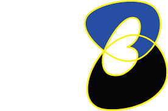

Alumni care
SMA Negeri 3 Bandung telah melaksanakan ikasma atau ikatan alumni sman 3 bandung adalah acara yang dimana para alumni memberitahukan kepada para murid sman 3 bandung akan rasa peduli mereka kepada adik adiknya.
"Alumni care SMAN 3 Bandung" merujuk pada program kepedulian yang dijalankan oleh para alumni SMAN 3 Bandung, terutama melalui IKASMA3, untuk mendukung almamater dan sesama alumni. Ini mencakup berbagai inisiatif seperti program beasiswa untuk siswa berprestasi dan calon pemimpin, serta kegiatan sosial dan lingkungan.
Melalui kegiatan ini, untuk menjadikan para murid lebih bersemangat dan tidak berbeda dengan yang lain karena mereka dapat berkarya dan dapat menunjukan potensi mereka dan rasa kasih sayang mereka kepada sesama
Kembali